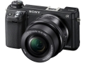

器材库 > APS及其以下画幅可换镜头数码相机 > NEX-6

该产品没有存档的规格参数
该产品暂无存档的网友点评
产品图 / 样片
评测 / 相关文章
该产品暂无存档的评测文章
相关文章
- ［试用］扫拍城市里最后的胡同故事 （原站已下线）
- ［试用］选择从SIGMA 19/2.8和30/2.8开始 （存档）
- ［试用］为转接A7R 入手Helios 44M-4俄罗斯老镜头 （原站已下线）
- ［试用］EOS-NEX自动对焦转接环开箱记 （原站已下线）
- ［资讯］全面轻量化裸奔便携摄影装 （存档）
- ［试用］国产美能达AF-nex转接环+nex6 挑战性价比 （原站已下线）
- ［试用］不玩CCTV有点冤—NEX6转接国产电影头 （原站已下线）
- ［试用］从NEX6开始换个玩法—转转接接，其乐无穷 （原站已下线）
- ［试用］专业化操控 索尼微单NEX-6详细评测 （原站已下线）
- ［资讯］DxOMark公布索尼NEX-6测试结果 （原站已下线）